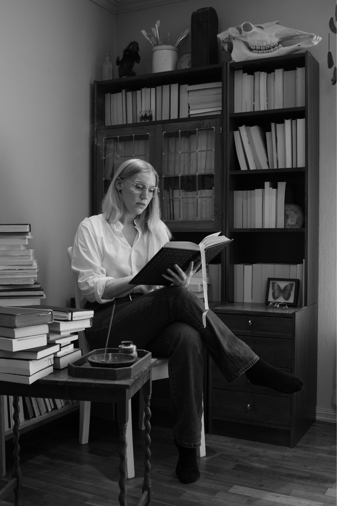

Georgia Bell
American fiction writer based in Kristiansand, Norway. b. 1994. I write literary fiction about how shame, desire, institutions and surveillance affect selfhood and social power.
Work
Panopticon
Longlisted for the
Blue Pencil Agency First Novel Award
.
Contact
Email: georgiamaebell@gmail.com